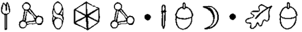
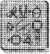

ARTEMİS tokmağı çevirmeyi denedi ve tüm uğraşı sonunda, tek elde ettiği, avcunun acıması oldu. Kapı kilitliydi. Peri, kilidi silahıyla kırmış olmalıydı. Bu çok kurnazca bir hareketti. Denklemde bir değişken eksilmişti. Kendisi de aynı şeyi yapardı.
Artemis kapıyı boşu boşuna zorlamayı deneyerek zaman kaybetmedi. Kapı sağlam çeliktendi ve o ise yalnızca on iki yaşındaydı. Bunu çözmek için ille de bir dahi olmanız gerekmiyordu. Onun yerine, Fowller’in tek vârisi monitörlerin olduğu duvarın önüne geçip gelişmeleri oradan izledi.
LEP’in ne yapmak istediğini hemen anlamıştı - önce yardım Çağrışma yanıt vermek için bir troll gönder, bunu bir davet olarak yorumla, bir sonraki adım, bir tugay motorize goblinin malikâneyi ele geçirmesi olacaktı. Bu akıllıca bir düşünceydi. Ve tahmin edilebilirdi. Artemis düşmanlarının yeteneklerini bir kez daha hafife almıştı. Öyle ya da böyle, üçüncü bir kez olmayacaktı.
Bu üzücü olaylar ekranlara yansırken, Artemis’in duyguları dehşetten gurura dönüştü. Kâhya başarmıştı. Trollü yenmeyi başarmıştı, üstelik tek bir kez bile yardım istemeden. Artemis görüntüleri izlerken, belki de hayatında ilk kez, Kâhya ailesinin verdiği hizmetin değerini anladı.
Artemis döner frekanstan yayın yapan, üç bantlı telsizi açtı.
“Kumadan Root, sanırım tüm kanalları izliyorsunuz...”
Birkaç saniye boyunca mikro hoparlörlerden yalnızca boş gürültüler yükseldi, sonra Artemis bir mikrofonun açılma düğmesinden gelen keskin tıkırtıyı duydu.
“Seni duyuyorum, insan. Senin için ne yapabilirim?”
“Yarbayla mı görüşüyorum?”
Hoparlörün üzerindeki siyah tülden bir ses yükseldi. Hafif bir kişnemeyi andırıyordu.
“Hayır, ben kumandan değilim. Adım Foaly, sentor. Fidye için birilerini kaçıran, kısa ömürlü insanla mı görüşüyorum?”
Aşağılandığını anlaması, Artemis’in biraz zamanını aldı.
“Bay... şey... Foaly. Görülüyor ki psikoloji ile ilgili metinlerinizi iyi okumamışsınız. Rehineciyi kızdırmak akıllıca bir - iş değildir. Dengesiz davranabilirim.”
“Dengesiz davranabilmek mi? Bu bir olasılık değil, gerçek. Önemli değil ya, neyse. Nasıl olsa, kısa süre sonra, radyoaktif moleküllerden oluşan bir buluta dönüşeceksin.” Artemis kıkırdadı. “İşte bu noktada yanılıyorsun, dört ayaklı dostum. Biyolojik bomba patlayıncaya kadar, ben bu zaman diliminden çoktan kurtulmuş olacağım.” Kıkırdama sırası Foaly’deydi. “Blöf yapıyorsun, insan. Bundan kurtulmanın bir yolu olsaydı, onu bulurdum. Sanırım şeye dayanarak konuşuyorsun —”
Neyse ki tam o anda, Root mikrofonu Foaly’nin elinden kaptı.
“Fowl? Ben Yarbay Root. Ne istiyorsun?”
“Sizin ihanet girişiminize karşın, hâlâ anlaşmaya varma kararımın geçerli olduğunu söylemek istiyorum, Yarbay.”
“Bu trollün benimle hiçbir ilgisi yok,” diye karşı çıktı Root. “Olay benim isteğim dışında oldu.”
“Asıl gerçek, yapılmış ve üstelik LEP tarafından yapılmış olduğu. Size olan tüm güvenimiz sarsıldı. İşte ültimatomum. Altını göndermek için tam otuz dakikanız var, aksi halde Yüzbaşı Short’u serbest bırakmayı reddedeceğim. Ayrıca, zaman diliminden çıkarken, onu yanıma almayacağım, biyolojik bomba onu parçalasın diye onu burada bırakacağım.”
“Saçmalama, insan. Kendini kandırıyorsun. Çamur teknolojisi bizimkinin, ölçülemeyecek kadar gerisinde. Zaman diliminden kurtulmanın hiçbir yolu yok.”
Artemis mikrofona doğru yaklaşarak kurda benzer gülümsemesiyle sırıttı.
“Bunu anlamanın tek bir yolu var, Root. Önsezilerinize güvenerek Yüzbaşı Short’un yaşamını tehlikeye atmak ister misiniz?”
Root’un kararsızlığı, hoparlörde gelen parazitlerle vurgulanıyordu. Yanıtı geldiğinde, sesindeki yenilmişlik duygusu rahatlıkla hissedilebiliyordu.
“Hayır,” diye iç geçirdi. “İstemem. Altınını alacaksın, Fowl. Bir ton. Yirmi dört ayar.”
Artemis kendinden memnun, sırıttı. Şu Yarbay Root iyi bir oyuncuydu.
“Otuz dakika, Yarbay. Saatiniz durduysa, saniyeleri sayın. Bekleyeceğim. Ama uzun süre değil.”
Artemis bağlantıyı kesip döner koltuğuna kuruldu. Oltadaki yeme gelmiş görünüyorlardı. Hiç kuşkusuz, LEP’in inceleme ekibi onun bu ‘kazara’ davetini fark etmişti. Periler fidyeyi ödeyecekti, çünkü Artemis ölür ölmez, altının yine kendilerinin olacağına inanıyorlardı. Nasıl olsa biyolojik bomba patlayınca, insan buharlaşacaktı. Ama tabii ki bu doğru değildi. Teorik olarak.
Kâhya kapı kasasına üç el ateş etti. Kapı tümüyle çeliktendi ve normal koşullarda, kurşunların sekerek geri gelmeleri gerekirdi. Oysa kasa malikânenin inşasında kullanılan gözenekli taşlardan yapılmıştı. Bu yüzden tebeşir gibi dağıldı. Bu temel bir güvenlik hatası ve bu iş biter bitmez, ilgilenilmesi gereken bir konuydu.
Efendi Artemis monitörlerin karşısındaki koltuğunda sakince bekliyordu.
“İyi iş çıkardın, Kâhya.”
“Teşekkürler, Artemis. Orada, bir an sorun yaşadık.
Yüzbaşı olmasaydı eğer...”
Artemis başını salladı. “Evet gördüm. İyileştirme, peri sanatlarından biridir. Bunu neden yaptığını merak ediyorum.”
“Ben de öyle,” dedi Kâhya, yavaşça. “Bunu kesinlikle hak etmedik.”
Artemis ona keskin bir bakış fırlattı. “İnancını kaybetme, eski dostum. Sona yaklaştık.”
Kâhya başını salladı; hatta gülümsemeyi bile denedi. Ama buna cesaret edemedi.
“Bir saatten kısa süre içinde, Yüzbaşı Short, adamlarının yanma gidecek ve bizim de daha da zevkli girişimlere başlamak için yeterli paramız olacak.” “Biliyorum. Ben yalnızca...”
Artemis’in sormasına gerek yoktu. Kâhya’nın tam olarak neler hissettiğini biliyordu. Peri her ikisinin de hayatını kurtarmıştı ve Artemis onu fidye için tutmak konusunda hâlâ ısrarlıydı. Kâhya gibi onurlu biri için bu kabul edilebilir bir davranış değildi.
“Görüşmeler sona erdi. Yüzbaşı Short, şu ya da bu şekilde, hemcinslerinin yanma gönderilecek. Ona bir zarar verilmeyecek. Sana söz veriyorum.”
“Peki ya Juliet?”
“Ne olmuş ona?”
“Kız kardeşim tehlikede mi?”
“Yo. Tehlike yok.”
“Yani, bu periler bize altını verip gidecekler mi?” Artemis yavaşça burnundan soludu. “Yo, tam olarak değil. Yüzbaşı Short özgür kalır kalmaz, Fowl Malikânesine biyolojik bir bomba atacaklar.”
Kâhya derin bir soluk aldı ama konuşmakta kararsız kaldı. Görülüyordu ki planın devamı vardı. Bilmesi gerektiğinde, Efendi Fowl ona her şeyi anlatacaktı. Bu yüzden, işverenini sorguya çekmek yerine, basit bir söz söyledi.
“Sana güveniyorum, Artemis.”
“Evet,” diye yanıt verdi oğlan, bu güvenin ağırlığı yüzünden okunuyordu. “Biliyorum.”
Cudgeon politikacıların en iyi yaptıkları şeyi yapıyordu: Sorumluktan kaçmaya çalışmak.
“Memurunuz insanlara yardım etti,” dedi bir çırpıda, elinden geldiğince kızgın görünmeye çalışarak. “Kadınınız vekilimize saldırana kadar, bu operasyon, tam planlandığı gibi ilerliyordu.”
“Vekil mi?” diye güldü Foaly. “Troll şimdi vekil mi oldu?”
“Evet. Öyle. Ve o insan onu paramparça etti. Bölümünüz bu denli başarısız olmasaydı, bu olay şimdiye kadar biterdi.”
Genellikle, böylesi bir durumda Root’un tepesi atardı ama şu an Cudgeon’ın, kariyerini kurtarmak için uçan kuştan medet umduğunu biliyordu. Bu yüzden kumandan yalnızca gülümsedi.
“Hey, Foaly?”
“Evet, Yarbay?”
“Trollün saldırısını diske kaydettik mi?”
Foaly acıklı bir iç çekti. “Hayır, efendim, troll eve
girmeden az önce, disklerimiz bitti.”
“Ne yazık.”
“Gerçekten utanç verici.”
“Yarbay Vekili Cudgeon’ın duruşması için, bu diskler gerçekten çok önemliydi.”
Cudgeon’ın soğukkanlılığı bir anda uçup gitmişti. “Ver o diskleri bana, Julius! Orada olduklarını biliyorum! Bu yaptığın arsızca bir engelleme.”
“Buradaki tek engellemeden sorumlu olan, sensin Cudgeon. Kariyerinde ilerlemek için bu işten yararlanmaya kalkıştın.”
Cudgeon’ın yüzü Root’la uyum sağlamak istermişçesine morardı. Olayın kontrolü ellerinin arasından kayıp gidiyordu ve bunun farkındaydı. Tüm periler ve hatta Chix Verbil bile liderlerinin yanından uzaklaşmaya başlamışlardı.
“Burada yetkili hâlâ benim, Julius, bu yüzden ver o diskleri bana, yoksa seni göz altına alırım.”
“Ya, öyle mi? Sen ve kimin ordusu acaba?” Cudgeon’ın yüzü, bir saniye boyunca, o eski kibirle parladı. Gerisinde hiçbir polis memuru olmadığını görür görmez, kibiri buharlaşıverdi.
“Doğru,” diye kıs kıs güldü Foaly. “Artık Yarbay Vekili değilsin. Emir aşağıdan geldi. Komisyonla bir toplantın var ve bunun sana aralarında bir yer vermek için olduğunu sanmıyorum.”
Cudgeon’ın asıl tepesini attıran Foaly’nin sırıtışıydı. “Ver şu diskleri bana!” diye kükredi Cudgeon, Foaly’yi harekât mekiğine mıhlayarak.
Root bir süre güreşmelerine izin vermeyi düşündü ama şu an isteklerini yerine getirme zamanı değildi.
“Seni yaramaz seni,” dedi Root, işaret parmağını Cudgeon’a doğru sallayarak. “Foaly’yi benden başka kimse dövemez.”
Foaly’nin beti benzi attı. “Parmağınıza dikkat edin. O şeyi hâlâ üzerinizde taşıyorsunuz —”
Root’un başparmağı, yanlışlıkla boğumuna değip küçük bir gaz vanasını açtı. Sızan gaz, lateks parmak ucundan, Cudgeon’ın ensesine doğrudan sakinleştirici küçük bir ok fırlattı. Yakında Er olacak olan, Yarbay Vekili, bir taş gibi yere yığıldı.
Foaly boynunu ovaladı. “İyi atıştı, Yarbay.”
“Neden söz ettiğini bilmiyorum. Bu kesinlikle bir kazaydı. Bu sahte parmak olayını tamamen unutmuştum. Sanırım, benim gibi çok sayıda örnek vardır.” “Oh, kesinlikle. Ne yazık ki Cudgeon birkaç saat baygın kalacak. O uyanıncaya kadar, işin bütün heyecanı bitmiş olacak.”
“Yazık.” Root hafifçe gülümsemek için kendine izni verdi, sonra da işinin başına döndü. “Altın burada mı?” “Evet, az önce gönderildi.”
“İyi.” Root Cudgeon’ın korkak birliğini çağırdı. “Altını uçan bir yük arabasına koyup gönderin. Bir sorun çıkarsa, size kanatlarınızı yediririm. Anlaşıldı mı?” Hiç kimse yanıt vermedi ama anlaşılmıştı. Hiç kuşkusuz.
“Pekâlâ. Şimdi uçuşa geçirin.”
Root harekât mekiğinin içine girip gözden kayboldu, Foaly peşinden gitti. Yarbay mekiğin kapısını sıkıca kapadı
“Yüklü mü?”
Foaly ana paneldeki önemliymiş gibi duran birkaç düğmeye bastı.
“Şimdi yüklendi.”
“En kısa sürede fırlatılmasını istiyorum.” Root lazer koruyuculu, ışıkkıran camdan dışarı bir göz attı. “Birkaç dakikamız kaldı. Güneş ışınlarını görmeye başladım bile.” Foaly klavyesinin üzerine ciddiyetle eğildi. “Sihir bitiyor. On beş dakika içinde kendimizi yerüstü gündüz vaktinin tam ortasında bulacağız. Neutrino akışları bütünlüklerini 'kaybediyor. ”
“Anlıyorum,” dedi Root, yine yalan söylüyordu. “Pekâlâ, anlamıyorum. Ama on beş dakikayla ilgili bölümü anladım. Yani bu, Yüzbaşı Short’u oradan çıkartmak için on dakikan var, demek oluyor. Ondan sonra, tüm insanlık soyu adına, oturup dua edeceğiz.”
Foaly bir başka kamerayı daha harekete geçirdi. Bu kamera uçan yük arabasına bağlıydı. Parmağını ustaca, güzergâhın üzerinde gezdirdi. Yük arabası ileri doğru fırladı, az kalsın Chix Verbil’in başını uçuracaktı.
“iyi sürüyorsun,” diye mırıldandı Root. “Acaba basamakları tırmanabilecek mi?”
Foaly başını bilgisayarlarından kaldırmadı bile. “Otomatik temizleme dengeleyicisi. Bir nokta beş metrelik birleşim. Sorun yok.”
Root ona ters bir bakış fırlattı. “Bunu yalnızca beni kızdırmak için yapıyorsun, değil mi?”
Foaly omuz silkti. “Olabilir.”
“İyi, güzel, öbür parmaklarım dolu olmadığı için şanslı sayılırsın. Ne demek istediğimi anladın mı?”
“Evet efendim.”
“Güzel. Şimdi Yüzbaşı Short’u geri getir.”
Holly sütunlu girişin altında yavaşça uçuyordu. Turuncu güneş ışınları maviliğin içinde çizgiler oluşturmuştu. Zaman durdurumu sona ermek üzereydi. Root’un her yeri mavi durulamadan geçirmesine yalnızca dakikalar kalmıştı. Foaly’nin sesi kulaklığında yankılandı.
“Pekâlâ, Yüzbaşı Short. Altın yola çıktı. Hareket etmeye hazır ol.”
“Fidyecilerle pazarlık etmiyor muyuz?” dedi Holly şaşkınlık içinde. “Burada neler oluyor?”
“Hiçbir şey,” diye ilgisizce yanıt verdi Foaly. “Bire bir değiş-tokuş. Altın gidiyor, sen geliyorsun. İçeri bir füze gönderiyoruz. Koca bir mavi patlama ve her şey sona eriyor.”
“Fowl biyolojik bomba hakkında bir şey biliyor mu?”
“Evet. Bu konuyla ilgili her şeyi biliyor. Zaman diliminden kaçabileceğini iddia ediyor.”
“Bu olanaksız.”
“Doğru.”
“Ama hepsi ölecek.”
“Çok önemliydi sanki,” diye sertçe karşılık verdi,
Foaly ve Holly onun omuz silktiğini görür gibi oldu. “Peri Halkıyla uğraşırsan, başına gelecek olan budur.”
Holly’nin yüreği parçalanmıştı. Fowl’un uygar yeraltı için gerçek bir tehlike unsuru oluşturduğu kesindi. Arkasından pek gözyaşı dökülmeyecekti. Ama Juliet, o genç kız masumdu. Bir şans daha hak ediyordu.
Holly iki metre yüksekliğe indi. Kâhya’nın başıyla aynı seviyedeydi. İnsanlar bir zamanlar koridor olarak kullanılan enkaz yığınının ortasında toplanmışlardı. Aralarında bir kopukluk vardı. LEP memuru bunu hissedebiliyorlardı.
Holly Artemis’e suçlarcasına baktı. “Onlara söyledin mi?”
Artemis ona dikkatlice baktı. “Ne söylemem gerekiyordu?”
“Evet, peri, ne söylemesi gerekiyordu?” diye yineledi Juliet, kavgacı bir tavırla, hipnotizmanın etkisi hâlâ tam olarak geçmemişti.
“Aptal rolü oynama, Fowl. Ne demek istediğimi biliyorsun. ”
Artemis asla uzun süreli aptal rolü oynayamazdı. “Evet, Yüzbaşı Short. Biliyorum. Biyolojik bomba. Bana yardım etmek içinse eğer, kaygınız beni gerçekten çok duygulandırdı. Ama yine de kendinizi üzmeyin. Her şey plana göre ilerliyor.”
“Plana göre!” dedi Holly, soluk soluğa, çevrelerindeki enkazı işaret ederek. “Bu da planın bir parçası mıydı? Ya Kâhya’nın neredeyse öldürülmesi - tüm bunlar planda var mıydı?”
“Hayır,” diye katıldı Artemis. “Troll küçük bir sorun yarattı. Ama tüm projenin yanında, önemsenmeyecek bir ayrıntıydı, yalnızca.”
Holly soluk benizli insanı bir kez daha yumruklamamak için kendine engel olmaya çalışarak, Kâhya’ya döndü.
“Tanrı aşkına, mantığına kulak ver. Zaman diliminden kaçamazsınız. Bu daha önce hiç yapılmadı.” Kâhya’nın yüz hatları taştan oyulmuştu sanki. “Artemis yapılabileceğini söylüyorsa, demek ki yapılabilir.”
“Ya kız kardeşin. Bir suçluya sadakat uğruna, onun hayatını tehlikeye mi atmak istiyorsun?”
“Artemis bir suçlu değil, küçük hanım, o bir dahi. Şimdi, görüş çizgimden uzaklaşın lütfen. Ana girişi izliyorum.”
Holly altı metreye vınladı.
“Delisiniz siz. Hepiniz! Beş dakika içinde hepiniz toz haline geleceksiniz. Farkında değil misiniz?”
Artemis iç geçirdi. “Cevabınızı aldınız, Yüzbaşı. Şimdi, lütfen. Dava açısından çok nazik bir evredeyiz.” “Dava mı? Bu basbayağı bir kaçırma! En azından ne olduğunu söyleyecek cesareti gösterin.”
Artemis’in sabrı tükenmek üzereydi.
“Kâhya, elimizde sakinleştiricili enjektörlerden kaldı mı?”
Devasa hizmetkâr konuşmadı ama başıyla onayladı. Ama o anda periyi uyutma emri verilseydi, bunu yapıp yapamayacağını bilemiyordu. Neyse ki, Artemis’in dikkati, caddedeki hareketliliğe çevrilmişti.
“Ah, LEP teslim olmuş gibi görünüyor. Kâhya yüklemeyi gözden geçir. Ama uyanık ol. Peri dostlarımız, üçkâğıtçılık konusunda uzmandırlar.”
“Bak şu konuşana,” diye mırıldandı Holly.
Kâhya yüklemeyi kontrol edip silahını kapmak için, hızla yıkık girişe doğru ilerledi. Dikkatini, içinde bulunduğu bu ikilemden farklı yöne çevirdiği için bu askeri eyleme minnettardı. Bu gibi durumlarda eğitim ön plana geçerdi. Duygulara yer yoktu.
Havada hâlâ ince bir toz bulutu vardı. Kâhya gözlerini kısıp pusun arasından önündeki caddeye baktı. Gözlerine taktığı peri filtreleri yaklaşan sıcak bir beden olmadığını gösteriyordu. Öte yandan, ön kapıya doğru kendi kendine sürüklenen, yük arabasına benzer bir şey vardı. Parıldayan bir hava yastığının üzerinde dalgalanıyordu. Hiç kuşkusuz, Efendi Artemis bu makinenin nasıl işlediğini anlardı, Kâhya’nın ise tek düşündüğü, bu aleti etkisiz duruma getirip getiremeyeceğiydi.
Yük arabası ilk basamağa tosladı.
“Sözüm ona otomatik dengeleme,” diye burnundan soludu Root
“Ya, ya, ya,” diye yanıt verdi Foaly. “Üzerinde çalışıyorum.”
“Bu, fidye,” diye bağırdı Kâhya.
Artemis göğsünü dolduran heyecanını bastırmaya çalıştı. Şu an, heyecanların, denkleme girme zamanı değildi.
“Bubi tuzağı var mı, kontrol et.”
Kâhya, dikkatlice verandaya çıktı. Ayaklarının altında, parçalanmış taştan, insan ve hayvan büstleri duruyordu.
“İçinde düşman yok. Kendinden pervaneliymiş gibi duruyor.”
Yük arabası basamakların üzerinde yalpaladı.
“Bu şeyi kimin kullandığını bilmiyorum ama birkaç ders alması gerek.”
Kâhya yük arabasının altına yakından bakmak için yere çömeldi.
“Görünürde patlayıcı yok.”
Cebinden bir Süpürücü çıkartıp teleskopik antene uzattı.
“Dinleme aygıtı da yok. En azından fark edilir bir şey yok. Dur bakalım burada neyimiz varmış?”
“Of, of,” dedi Foaly.
“Bu bir kamera.”
Kâhya uzanıp balık gözü merceği kablosundan çekip çıkarttı.
“İyi geceler, beyler.”
Yük arabası içindeki ağırlığa rağmen Kâhya’nın dokunuşuna kolayca tepki verip eşikten kayarak hole girdi. Sanki yükünün boşaltılmasını bekliyormuşçasına, hafifçe vızıldayarak orada öylece durdu.
Artık Artemis’in beklediği an gelmişti ama ona elini sürmeye korkuyor gibiydi. O kadar aydan sonra, şeytani projesinin gerçekleşmek üzere olduğuna inanmak güçtü. Elbette ki bu son dakikalar, en tehlikeli olanlarıydı ve hayati önem taşıyorlardı.
“Aç,” dedi Artemis, en sonunda, kendi sesinin titremesine şaşırarak.
Bu dayanılmaz bir andı. Juliet gözlerini fal taşı gibi açarak kararsızca yaklaştı. Holly bile hız keserek, ayağı mermer fayanslara değene kadar alçaldı. Kâhya siyah brandanın fermuarını açıp yük arabasının arkasına doğru sıyırdı.
Kimse bir şey söylemedi. Artemis bir yerlerde 1812 Uvertürünün çaldığını hayal etti. Altın orada parlak sıralar halinde istiflenmiş duruyordu. Gizemli bir havaya, bir sıcaklığa, aynı zamanda da kendine özgü bir tehlikeye sahip gibiydi. Bu altının sağlayacağı akıl almaz zenginlik için, ölmeye ya da öldürmeye hazır çok sayıda insan vardı.
Holly büyülenmişti. Toprağa ait oldukları için, perilerin madenlere karşı özel bir zaafları vardı. Ama o parlaklığı ve o cazibesiyle en sevdikleri maden, altındı.
“Ödediler,” diye soludu Holly. “İnanamıyorum.”
“Ben de öyle,” diye mırıldandı Artemis. “Kâhya, gerçek mi?”
Kâhya kümenin içinden bir külçe aldı. Bir bıçağın ucunu külçeye saplayıp küçük bir çentik açtı.
“Kesinlikle gerçek,” dedi kırıntıyı ışığa tutarak. “En azından, bu öyle.”
“Güzel. Çok güzel. Boşaltmaya başla, tamam mı?
Yük arabasını Yüzbaşı Short’la birlikte geri göndereceğiz.
Adını duyan Holly’nin altına olan tutkusu bir anda dağıldı.
“Artemis, vazgeç. Hiçbir insan, asla peri altınına sahip olmayı başaramadı. Üstelik yüzyıllardır deniyorlar. LEP malını korumak için her şeyi yapar.”
Artemis olumsuzca başını salladı. Eğlenirmiş gibi. “Sana söylemiştim...”
Holly onu omuzlarından tuttu. “Kaçamazsın! Anlamıyor musun?”
Oğlan Holly’ye sakin bir bakışla karşılık verdi. “Kaçabilirim, Holly. Gözlerimin içine bak ve bana kaçamayacağımı söyle.”
Ve öyle yaptı. Yüzbaşı Holly Short onu tutsak eden insanın mavi-siyah gözlerine baktı ve içlerinde gerçeği gördü. Ve bir an için ona inandı.
“Daha zaman var,” dedi ümitsizce. “Yapılacak bir şeyler olmalı. Sihrim var.”
Çocuğun alnında bir kızgınlık kırışığı belirdi.
“Seni hayal kırıklığına uğratmaktan nefret ediyorum, Yüzbaşı ama yapılacak hiçbir şey yok.”
Artemis durakladı, bir an için bakışları, tavan arasındaki odaya takıldı. Acaba, diye düşündü. Tüm bu altına gerçekten ihtiyacım var mı? Yoksa vicdanı onu rahatsız edip zafer sarhoşluğunu mu elinden alıyordu? Artemis silkindi. Planına sadık kal. Planına sadık kal. Duygu yok.
Artemis omzunda tanıdık bir el hissetti.
“Her şey yolunda mı?”
“Evet, Kâhya. Boşaltmaya devam et. Juliet de sana yardım etsin. Yüzbaşı Short’la konuşmam gerek.”
“Bir sorun olmadığına emin misin?”
Artemis iç geçirdi. “Hayır, eski dostum, emin değilim. Ama artık çok geç.”
Kâhya başını sallayıp işine geri döndü. Juliet bir av köpeği gibi ağabeyini izledi.
“Pekâlâ, Yüzbaşı. Şu sihrinizle ilgili olarak.”
“Ne olmuş sihrime?” Holly’nin gözleri kuşkuyla açıldı.
“Bir dileğimin gerçekleşmesi için ne yapmam gerekiyor?”
Holly yük arabasına göz atı. “Şey, dileğine bağlı. Pazarlık edecek neyin var?”
Root kesinlikle sakin değildi. Sayıları gittikçe artan sarı renkli, geniş çizgiler maviliğin arasından kendilerini gösteriyordu. Birkaç dakika kalmıştı. Dakikalar. Bedenine zehir pompalayan keskin kokulu purosu baş ağrısını daha da arttırıyordu.
“Tüm gereksiz elemanlar binadan çıkarıldı mı?” “Geçen sorduğunuzdan bu yana gizlice geri dönmedilerse, evet.”
“Şimdi değil, Foaly. İnan bana, şimdi sırası değil. Yüzbaşı Short’la ilgili bir şey var mı?”
“Yok. Troll olayından sonra, görüntüyü kaybettik. Sanırım pili kırıldı. Bir an önce şu başlığı Holly’nin başından çıkartmalıyız, yoksa radyasyondan beyni kızaracak. Buraya kadar geldikten sonra, yazık olur.”
Foaly masasına döndü. Kırmızı bir ışık yavaşça yanıp sönmeye başladı.
“Durun, hareket algılayıcısı. Ana girişte bir hareketlilik var.”
Root ekranların başına geçti. “Büyütebilir misin?” “Hiç sorun değil.” Foaly gerekli koordinatları girerek, görüntüyü yüzde dört yüze getirdi.
Root en yakınındaki sandalyede oturuyordu.
“Yoksa, gördüğümü sandığım şeyi mi görüyorum?” “Kesinlikle,” diye kıkırdadı Foaly. “Bu madeni zırh olayından bile iyi.”
Gelen Holly idi. Altınla birlikte.
Yarım saniye içinde, Düzeltme Timi, Holly’nin yanında bitivermişti.
“Gel, seni tehlikeli bölgeden çıkaralım, Yüzbaşı,” diye ısrar etti perilerden biri, Holly’yi dirseğinden çekiştirerek.
Bir başkası miğferinin üzerinde bir radyasyon tarayıcısı gezdirdi.
“Burada kırılmış bir güç kaynağı var, Yüzbaşı. Başınıza hemen köpük püskürtmemiz gerek.”
Holly karşı çıkmak için ağzını açtı ve bir anda ağzı, radyasyonu yok edici köpükle doldu.
“Sonra yapılamaz mı?” dedi Holly, tükürür gibi. “Özür dilerim, Yüzbaşı. Zaman çok önemli. Yarbay, patlamadan önce, bir toplantı yapmak istiyor.”
Holly aceleyle, Gezici Harekât birimine götürüldü, ayakları yere bile değmiyordu. Çevresindeki Düzeltmeciler, kuşatmadan geriye bir iz kalmasın diye, yerleri taramaya başlamışlardı. Teknisyenler çanak antenleri söküp fişi çekmeye hazırlanıyorlardı. Yük arabası homurtular arasında ana kapıya doğru sürüldü. Biyolojik bomba patlatılmadan önce her şeyin güvenli bir uzaklığa taşınması gerekiyordu.
Root basamakların üzerinde bekliyordu.
“Holly,” dedi bir çırpıda. “Yani, Yüzbaşı demek istedim. Başardın.”
“Evet efendim. Sağ olun efendim.”
“Üstelik altını da getirdin. Bu, senin için övünülecek bir başarı.”
“Hayır, Yarbay. Bu başarının yalnızca yarısı bana ait.”
Root başını salladı. “Fark etmez. Kısa süre içinde hepimiz rahatlayacağız.”
Holly alnındaki radyasyon köpüğünü sildi.
“Bu konu hakkında düşündüm de efendim. Fowl bir hata daha yaptı. Bana eve yeniden girmememi emretmedi ve ilk defasında, beni eve kendisinin getirdiğini düşünecek olursak, davet hâlâ geçerli sayılır. Eve girip içeridekilerin düşüncelerini silebilirim. Altını duvarların içine gizleyebilir ve yarın gece, yeniden bir zaman durdurumu...”
“Hayır, Yüzbaşı.”
“Ama efendim...”
Root’un yüz hatları, kaybettikleri gerginliğe yeniden kavuşmuştu.
“Hayır, Yüzbaşı. Komisyon içimizden birini kaçıran bir Çamur Adamı öldürme işini ertelemek istemiyor.
Bu iş bitecek. Emir aldım ve bu emirler gerçek anlamda taşa kazılı.”
Holly Root’u harekât birimine doğru izledi.
“Ama kız, efendim. O masum.”
“Savaş zaiyatı. Kaderinde, yanlış safta olmak varmış. Artık onun için yapılacak bir şey yok.”
Holly kulaklarına inanamıyordu. “Savaş zaiyatı mı? Bunu nasıl söyleyebilirsiniz? O bir canlı.”
Root hızla dönüp Holly’yi omuzlarından yakaladı. “Sen elinden geleni yaptın, Holly,” dedi. “Kimse daha fazlasını yapamazdı. Üstelik fidyenin büyük bir bölümünü de geri getirdin, insanların Stockholm Sendromu dedikleri sorunu yaşıyorsun; seni tutsak edenlerle aranda bir bağ oluşturdun. Merak etme, geçecektir. Ama içerideki insanlar, hakkımızda her şeyi biliyorlar. Her şeyi. Onları artık hiçbir şey kurtaramaz.”
Foaly hesaplamalarından başını kaldırdı.
“Doğru değil. Teknik olarak. Bu arada, hoş geldin.” Holly Foaly’yi selamlamak için tek bir saniye bile ayıramazdı.
“Doğru değil, demekle ne kastediyorsun?”
“Ben de iyiyim, sorduğun için teşekkürler.”
“Foaly!” diye bağırdı Root’la Holly bir ağızdan. “Pekâlâ, Kitap’ta denildiği gibi. ‘Çamur Adam altını ele geçirirse, Sihre ya da peri gücüne rağmen, Bu altın onundur ömür boyunca, Ta ki göçüp gidene kadar bu dünyadan.’ Bu yüzden yaşarsa, kazanır. Bu kadar basit. Komisyon bile Kitaba karşı gelemez.”
Root çenesini kaşıdı. “Endişelenmem gerekir mi?”
Foaly, neşesizce güldü. “Hayır. Bu insanlar ölü sayılır.” “Ölü sayılmaları, yeterli değil.”
“Bu bir emir mi?”
“Olumlu, asker.”
“Ben asker değilim” dedi Foaly ve düğmeye bastı.
* * *
Kâhya şaşkınlık içindeydi.
“Geri mi verdin?”
Artemis başıyla onayladı. “Yarısını. Elimizde hâlâ büyük bir servet kaldı. Bugünkü piyasa değeri on beş milyon dolar kadar.”
Kâhya genelde soru sormazdı. Ama bu kez sorması gerekiyordu. “Neden Artemis? Söyleyebilir misin?” “Sanırım, söyleyebilirim.” Oğlan gülümsedi. “Yüzbaşıya bir borcumuz olduğunu düşündüm. Yerdiği hizmetin karşılığı olarak.”
“Hepsi bu mu?”
Artemis başıyla onayladı. Dileğinden söz etmeye gerek yoktu. Bir zayıflık olarak nitelendirilebilirdi.
“Hımm,” dedi Kâhya, göründüğünden daha zekice. “Şimdi bunu kutlamalıyız,” diye övündü Artemis, konuyu ustaca değiştirerek. “Sanırım, biraz şampanya içsek iyi olur.”
Artemis Kâhya’nın kendisine bakmasına fırsat tanımadan uzun adımlarla mutfağa doğru gitti.
Öbürleri ona yetişinceye kadar, Artemis üç şampanya kadehini Dom Perignon ile doldurmuştu bile.
“Henüz on sekizimi doldurmadım, biliyorum, ama eminim ki annem buna karşı çıkmazdı. Yalnızca bir kerelik.”
Kâhya ortalıkta bir şeylerin döndüğünü fark etti. Yine de kendisine sunulan kristal kadehi eline aldı.
Juliet ağabeyine baktı.
“Her şey yolunda mı?”
“Sanırım.” Kâhya derin bir soluk aldı. “Seni sevdiğimi biliyorsun, değil mi kardeşim?”
Juliet kaşlarını çattı - bu mahalledeki serserilerin çok sevimli buldukları bir diğer şeydi. Ağabeyinin omzuna bir şaplak attı.
“Bir koruma için, çok fazla duygusalsın.”
Kâhya doğrudan patronunun gözlerinin içine baktı.
“Bunu içmemizi istiyorsun, değil mi Artemis?”
Artemis, hizmetkârla göz göze geldi. “Evet, Kâhya, istiyorum.”
Tek bir söz daha etmeden, Kâhya bardağı başına dikti, Juliet de aynı şeyi yaptı. Hizmetkâr, içindeki sakinleştiricinin tadını hemen aldı ve Artemis Fowl’un boğazını sıkmaya zamanı olduğu halde, bunu yapmadı. Juliet’in son saniyelerinde üzülmesine hiç gerek yoktu.
Artemis arkadaşlarının yere yığılmalarını izledi. Onları hayal kırıklığına uğrattığı için üzgündü. Ama plandan haberleri olmuş olsaydı, endişeleri, sakinleştiriciyi etkisiz duruma getirebilirdi. Artemis kendi kadehinde dönüp duran baloncuklara baktı. Sırada planının en cesur adımı vardı. İçinde ufacık bir kuşku kırıntısıyla sakinleştirici katkılı şampanyasını içti.
Artemis yavaşça ilacın etkisini göstermesini bekledi. Uzun süre beklemesi gerekmedi, çünkü her doz vücut ağırlığına uygun olarak hesaplanmıştı. Düşünceleri girdap gibi dönmeye başladığında, bir daha hiç uyanmayabileceği aklına geldi. Artık kuşkulanmak için biraz g^;, diye kendi kendine çıkıştı ve bayıldı.
“Fırlatıldı,” dedi Foaly, masadan uzaklaşıp sandalyesine yaslanarak. “Artık iş kontrolümden çıktı.”
Polarlanmış pencerelerden füzenin ilerleyişini izlediler. Bu gerçekten de olağanüstü bir aletti. Ana silahı hafif olduğundan, radyoaktif serpinti istenilen dairenin içinde odaklandırılabilirdi. Çekirdeğinde kullanılan radyoaktif madde, yarılanma süresi on dört saniyelik olan solinyum 2 idi. Bu da Foaly’nin fazladan tek bir çime bile zarar vermeden, yalnızca Fowl Malikânesini mavi durulamadan geçirebileceği anlamına geliyordu; üstelik bina, bir dakikadan az bir sürede radyasyondan arınmış olacaktı. Odaklanmayı kabul etmeyen birkaç solinyum kıvılcımı olursa, bunlar zaman dilimi tarafından hapsedileceklerdi. Bu basitleştirilmiş katliamdı.
“Uçuş güzergâhı önceden programlandı,” diye açıkladı Foaly, hiç kimse dikkatini ona vermemiş olduğu halde. “Füze antreye girip orada patlayacak. Kaplaması ve ateşleme mekanizması plastik alaşımlı, bu yüzden tamamen parçalanacak. Pırıl pırıl bir iş.”
Root ve Holly bombanın çizdiği kavisi izlediler. Tıpkı tahmin edildiği gibi füze ortaçağdan kalma surların tek bir taşını bile yerinden oynatmadan bir anda yıkık girişin önüne iniverdi. Holly dikkatini füzenin ucundaki kameraya çevirdi. Kısa süre öncesine kadar, tutsak edilmiş olduğu büyük antreye bir an için baktı. Boştu.
Görünürde kimsecikler yoktu. Belki de, diye düşündü. Belki de. Sonra Foaly’ye ve onun elinin altındaki teknolojik aygıtlara baktı. Ye neredeyse ölmüş olduklarını anladı.
Biyolojik bomba patladı. Yoğunlaştırılmış ışıktan mavi bir küre kırılarak çevreye yayıldı ve malikânenin her köşesini öldürücü ışınlarıyla doldurdu. Çiçekler soldu, böcekler kuruyup büzüştü ve akvaryumdaki balıklar öldü. Tek bir milimetre küp bile ışınlardan sıyrılamamıştı. Artemis Fowl ve suç ortakları kaçmış olamazlardı. Bu olanaksızdı.
Holly bakışlarını artık yok olmaya yüz tutan mavi durulamadan başka yöne çevirip iç geçirdi. Tüm görkemli projelerine karşın, en sonunda Artemis de önemsiz bir insana dönüşmüştü. Ve Holly nedenini bilmeden, onun ölümüne üzülmüştü.
Root daha pratikti. “Pekâlâ. Üstünüzü değişin. Karartma giysilerinizi giyin.”
“Burası kesinlikle güvenli,” dedi Foaly. “Okuldayken derslerinizi dinlemez miydiniz?”
Yarbay burnundan soludu. “Bilime, seni sepetleyebileceğime inandığım kadar inanıyorum, Foaly. Bazı bilim adamları, bizi dağılmış olduğuna ikna etseler bile, radyasyonun havada uzun süre kalmak gibi bir alışkanlığı vardır. Hiç kimse bu birimden karartma giysileri olmadan çıkmayacak. Seni hesaba katmamıştım, Foaly. Yalnızca iki bacaklı giysiler var. Nasıl olsa, senin ekranların başında kalmanı istiyorum, her ihtimale karşı...” Hangi ihtimale karşı? diye merak etti Foaly ama bir yorumda bulunmadı. Sonradan, ben size demiştim, diyebilmek için sustu.
Root Holly’ye döndü.
“Hazır mısın, Yüzbaşı?”
Malikâneye geri dönmek. Üç cesedi teşhis etme düşüncesi, Holly’nin hiç hoşuna gitmiyordu. Ama bunun, görevinin bir parçası olduğunu biliyordu. Malikânenin içini en iyi bilen oydu.
“Evet efendim. Hemen yola koyuluyorum.”
Holly raftan kendine bir karartma giysisi seçip tulumunun üzerine geçirdi. Eğitimde öğrendiği gibi, vulkanize başlığı geçirmeden önce ölçüm aletini kontrol etti. Basıncın birdenbire düşmesi başlığın yırtılmasına neden olabilir, bu da uzun dönemde öldürücü sonuçlar doğurabilirdi.
Root içeri girecek ekibi sıraya dizdi. Bir numaralı Düzeltmecilerden arta kalanlar malikâneye girmeye hiç hevesli değildiler.
“Büyük olanın öldüğünden eminsiniz, değil mi?” “Evet, Yüzbaşı Kelp. Öyle ya da böyle, bir şekilde öldü.” Bela ikna olmamıştı. “Çünkü o çok dişli biri. Sanırım kendine özgü bir sihri var.”
Onbaşı Grub kıkırdadı ve hemen kendine bir kulak klipsi ayarladı. Annesine söylemekle ilgili bir şeyler mırıldanıp miğferine taktı.
Root kızardığını hissetti. “Dışarı çıkalım. Göreviniz altını yerini bulup geri getirmek. Bubi tuzaklarına dikkat edin. Fowl’a yaşarken güvenmiyordum, şimdi ölüyken ona daha da az güveniyorum.”
‘Bubi tuzağı’ sözcükleri herkesin dikkatini çekti. Baş düzeyinde patlayan Zıpzıp Betty adlı mayının düşüncesi bile, askerlerin soğukkanlılığını dağıtmaya yeterdi. Hiç kimse Çamur Adamlar kadar vahşi silahlar üretemezdi.
Kıdemsiz Recon memuru olarak Holly. Ye malikânede düşman olmadığına emin olsa da elinin doğrudan Neutrino 2000’ine uzandığını fark etti.
Malikâne ürkütücü derecede sessizdi, dinginliği bozan, yalnızca havada kalan son birkaç solinyum aleviydi. Ölüm de oradaydı, sessizliğin içinde. Malikâne ölümün beşiği gibiydi. Holly onun kokusundan anlıyordu. Ortaçağdan kalma duvarlarının arkasında milyonlarca böceğin", yerlerinin altında ise örümcek ve farelerin soğuyan leşleri vardı.
Kararsızca girişe yöneldiler. Holly alanı bir X-ışını tarayıcısıyla gözden geçirdi. Yassı kaldırım taşlarının altında, tozdan ve ölmüş bir örümceğin yuvasından başka bir şey yoktu.
“Temiz,” dedi Holly, mikrofona doğru. “İçeri giriyorum. Foaly, dinlemede misin?”
“Seninle birlikteyim, canım,” diye yanıt verdi Foaly. “Tabii bir mayına basmadığın sürece, bu durumda ben çoktan Harekât Odasına geri dönmüş olurum.”
“Isıllarla ilgili bilgi alabiliyor musun?”
“Mavi durulamadan sonra, hayır. Her yerde ısı artıkları var. Çoğunlukla da solinyum kıvılcımları. Birkaç gün boyunca yatışmaz artık.”
“Ama radyasyon yok, değil mi?”
“Yok.”
Root, kulaklarına inanamayarak burnundan soludu. Miğferinden, bir filin hapşırığına benzer bir ses yükselmişti.
“Bu evi eski yönteme uygun olarak temizleyecekmişiz gibi görünüyor,” diye yakındı.
“Çabuk olun,” diye önerdi Foaly. “En fazla beş dakika içerisinde Fowl Malikânesi yeniden dünyaya dönecek.”
Holly eskiden giriş olarak kullanılan yere girdi. Avize patlayan füzenin sarsıntısından, hafifçe sallanıyordu, ama geriye kalan her şey hatırladığı gibiydi.
“Altın aşağıda. Hücremde.”
Kimse yanıt vermedi. Yani sözle. İçlerinden biri öğürdü. Tam mikrofonun içine. Holly çevreyi gezdi. Bela iki büklüm oturmuş, midesini tutuyordu.
“Kendimi iyi hissetmiyorum,” diye inleydi. Çizmelerinin üzerindeki kusmuk lekeleri göz önüne alınacak olursa, yaptığı gereksiz bir açıklamaydı.
Onbaşı Grub büyük olasılıkla, Anne sözcüğünün yer aldığı bir cümle mırıldanmak için derin bir soluk aldı. Oysa ağzından tek çıkan yoğun bir safra artığıydı. Ne yazık ki Grub’ın, rahatsızlanmadan önce, siperliğini açmaya fırsatı olmamıştı. Bu pek güzel bir manzara sayılmazdı.
“Iğh,” dedi Holly, onbaşının siper-boşaltma düğmesine basarak. Grub’ın karartma formasının üzerini koca bir kusmuk dalgası kapladı.
“Of, kahretsin,” diye mırıldandı Root, ekip elemanlarını itekleyerek. Ama pek fazla uzaklaşamadı. Eşiğin üzerinden henüz bir adım atmıştı ki öbürleriyle birlikte kusmaya başladı.
Holly başlığındaki kamerayı kusan memurlara doğru çevirdi.
“Kahretsin, burada neler oluyor, Foaly?”
“Araştırıyorum. Bekle.”
Holly bilgisayar tuşlarına öfkeyle basıldığını duyabiliyordu.
“Pekâlâ. Ani kusma. Uzamsal bulantı... Yo, hayır.”
“Ne?” diye sordu Holly. Ama yanıtı biliyordu. Hem de çoktandır.
“Bu, sihir,” deyiverdi Foaly, sözcükler heyecanından anlaşılmıyordu. “Fowl ölünceye kadar, eve giremezler. Son derece alerjik bir tepki gibi. Bu demek oluyor ki, olamaz, bu demek oluyor ki...”
“Başardılar,” diye tamamladı Holly. “O yaşıyor. Artemis Fowl yaşıyor.”
“D’Arvit” diye homurdandı Root ve toprak rengindeki fayansların üzerine bir kez daha kustu.
Holly göreve tek başına devam etti. Kendi gözleriyle görmeliydi. Fowl’un bedeni oradaysa eğer, altının yanında olmalıydı, Holly bundan emindi.
Aynı aile portreleri ona ters ters baktılar ama bu kez sert değil, kendini beğenmiş bakışlarla. Holly Neutrino 2000’inin içindeki birkaç kurşunu üzerlerine boşaltmamak için kendini zor tuttu. Ama bu kurallara karşı gelmek olurdu. Artemis Fowl onları yendiyse, yenmişti. Bunun için birbirlerini suçlamayacaklardı.
Holly basamaklardan inerek hücresine geldi. Hücrenin kapısı biyolojik bombanın etkisinden hâlâ yavaşça sallanıyordu. Bir solinyum kıvılcımı tıpkı kapana kısılmış mavi bir yıldırım gibi odanın içinde sekerek sıçrıyordu. Holly görebileceklerinden ya da görmeyeceklerinden korkarak içeri girdi.
İçeride hiçbir şey yoktu. En azından ölü bir şey yoktu. Yalnızca altın vardı. Aşağı yukarı, iki yüz külçe kadar. Karyolasının şiltesinin üzerinde dizili. Güzelce, askeri bir düzende sıralanmışlardı. Hey gidi Kâhya, bir trolle boy ölçüşüp onu yenebilecek tek insandı. “Yarbay? Duyuyor musunuz? Tamam.”
“Olumlu, Yüzbaşı. Ceset sayısı?”
“Cesetler konusu olumsuz, efendim. Fidyenin geri kalanını buldum.”
Uzun bir sessizlik oldu.
“Bırak, Holly. Kuralları biliyorsun. Çekiliyoruz.” “Ama efendim. Bir yolu olmalı...”
Foaly konuşmayı böldü. “Ama hiçbir şey yok, Yüzbaşı. Gün ışığına yalnızca saniyeler kaldı ve buradan öğle vakti ayrılmak zorunda kalma olasılığımız kesinlikle hoşuma gitmiyor.”
Holly iç geçirdi. Bu mantıklıydı. Peri Halkı çıkış zamanını kendi seçebilirdi, tabii ki zaman dilimi sona ermeden olması kaydıyla. Onu asıl sinirlendiren, bir insan tarafından yenilgiye uğratılmış olmaktı. Üstelik çocuk yaştaki bir insan.
Hücreye son bir kez göz attı. Burada koca bir nefret topu doğdu, diye düşündü ve er ya da geç üstesinden gelmesi gerekiyordu. Holly silahını kılıfının içine yerleştirdi. Bunu bir an önce yapmayı tercih etti. Bu kez kazanan Fowl olmuştu ama onun gibi biri uzun süre boyunca şerefli bir yaşam sürdüremezdi.
Kısa zaman sonra yeni bir servet edinme projesi yapmış olarak geri dönecekti. Ve geri döndüğünde karşısında Holly Short’u bulacaktı. Koca bir silah ve gülümsemeyle onu bekler durumda.
Zaman diliminin çevresindeki toprak yumuşaktı. Ortaçağdan kalma surların, beş yüz yıllık kötü kanalizasyon sistemi binanın temellerini gerçek bir bataklığa çevirmişti. Mulch’ın çıkacağı yer burasıydı.
Bu noktayı seçmesinin asıl nedeni yumuşak zemindi. Öbür nedeni de kokuşuydu. İyi tünel kazabilen bir cüce, yarım kilometrelik bir granit yatağının içinden bile, altının kokusunu rahatlıkla alabilirdi. Mulch Diggums, bu meslekteki en iyi burunlardan birine sahipti.
Uçan yük arabası havada korumasızca dalgalanıyordu. En başarılı Düzeltmecilerden ikisi ele geçirilen fidyenin yanında nöbet tutuyorlardı ama şu an sürekli kusan kumandana bakıp kıkırdaşıyorlardı.
“Şey, yarısını kussam olmaz mı, Chix?”
Chix Root’un tükürmesini taklit ederek başım salladı.
Chix Yerbil’in maskaralıkları Mulch’a hırsızlık için uygun zaman sağlamıştı. Mulch tünelden dışarı tırmanmadan önce tüplerini temizledi. En son istediği şey ani bir gaz çıkartarak LEP’i başına toplamaktı. Telaşlanmasına gerek yoktu. Chix Yerbil’in suratına ıslak, pis kokulu bir solucanla vursa, spritein ruhu bile duymazdı.
Birkaç saniye içinde, iki düzine külçeyi, tünele aktarmayı başarmıştı. Bu hayatında yaptığı en basit işti. Mulch son iki külçeyi de açtığı deliğe atarken kahkahasını bastırmak zorunda kaldı. Julius onu bu işe bulaştırarak gerçekten de büyük bir iyilik yapmıştı. İşler asla bu kadar tıkırında gitmemişti. Bir kuş kadar özgürdü, zengindi ve her şeyden önemlisi, öldüğünü sanıyorlardı. LEP altının kaybolduğunu fark edene kadar, Mulch Diggums onlardan yarım kıta uzaklaşmış olacaktı. Tabii fark ederlerse eğer.
Cüce yerin iyiçe altına indi. Tüm bu hâzineyi taşımak için birkaç kez gidip gelmesi gerekecekti ama uğraşmaya değerdi. Bu kadar çok parayla erkenden emekliye ayrılabilirdi. Elbette ki ortadan tamamen kaybolması gerekiyordu, ama sinsi beyninin içinde yeni bir plan oluşmaya başlamıştı bile.
Bir süre yerüstünde yaşayacaktı. Işıktan hiç hoşlanmayan, cüce bir insan kılığına girecekti. Belki de kaim güneşlikleri olan bir çatı katı satın alırdı. Manhattan’da ya da Monte Carlo’da. Aslında güneşten kaçıp evine kapanan bir cüce insanlara garip gelebilirdi. Ama ne fark ederdi -ki nasıl olsa inanılmaz zengin bir cüceydi. Ve insanlar ondan bir şey elde ettikleri sürece ne denli acayip olursa olsun, anlatacağı her öyküye inanacaklardı. Tercihen de yeşil ve katlanabilir bir şeye.
Artemis birisinin onu çağırdığını duyabiliyordu. Sesin arkasında bir yüz vardı ama buğuluydu, kim olduğunu çıkartamıyordu. Babası olabilir miydi?
“Baba?” Sözcük, ağzına yakışmıyordu. Alışılmadık ve unutulmuşlardı. Artemis gözlerini açtı.
Kâhya üzerine doğru eğilmişti.
“Artemis. Uyanıksın.”
“Ah, Kâhya. Demek sensin.”
Artemis ayağa kalktı, harcadığı çabadan başı dönmüştü. Dengesini sağlaması için Kâhya’nın elini dirseğine koyacağını umdu. Ama beklediği hareket gelmedi. Juliet bir şezlongun üzerinde, minderlerin arasına gömülmüş, yatıyordu. Anlaşılan, ilacın etkisi daha geçmemişti.
“Yalnızca uyku haplarıydı, Kâhya. Zararsız.”
Hizmetkârın gözlerinde, tehlikeli bir parıltı vardı. “Açıkla.”
Artemis gözlerini ovuşturdu. “Daha sonra, Kâhya. Şu anda kendimi birazcık —”
Kâhya Artemis’in yolunu kesti. “Artemis, kız kardeşim kendinden geçmiş, orada yatıyor. Az daha ölecekti. Bu yüzden şimdi açıkla!”
Artemis şimdiye kadar kimseden bir emir almamış olduğunu fark etti. Kendini aşağılanmış hissetti, sonra birden Kâhya’nın haklı olabileceğini düşündü. Fazla ileri gitmişti.
“Sana uyku haplarıyla ilgili bir şey söylemedim, çünkü bedenin onlara karşı mücadele edecekti. Bu doğal bir tepki. Ve hemen uyuyakalmamız planımız açısından büyük önem taşıyordu.”
“Plan mı?”
Artemis rahat bir sandalyeye oturdu.
“Zaman dilimi bu işin en can alıcı noktasıydı. LEP’in elindeki son kozu. Onları bunca yıldır yenilmez yapan şey bu. Her olay kontrol altına alınabilir. Oysa bu ve biyolojik bomba, harika bir birleşim oluşturuyordu.” “Peki ama neden ilaçla uyutulmamız gerekiyordu?” Artemis gülümsedi. “Pencereden dışarı bak. Görmüyor musun? Gittiler. Bitti.”
Kâhya tül perdelerden dışarı göz attı. Işık parlak ve berraktı. Puslu bir mavi değildi. Yine de hizmetkâr pek etkilenmemişti. “Şimdilik gittiler. Bu gece geri döneceklerdir, bundan eminim.”
“Hayır. Bu kurallara aykırı. Onları yendik. Hepsi bu, oyun sona erdi.”
Kâhya bir kaşını kaldırdı. “Uyku hapları, Artemis?” “Bakıyorum da, dikkatin dağılmamış.”
Kâhya’nın yanıtı öfkeli bir sessizlikti.
“Uyku hapları. Pekâlâ. Zaman diliminden kaçmanın bir yolunu bulmalıydım. Kitabı karıştırdım ama bununla ilgili bir şey yoktu. Bir ipucu bile. Peri Halkı’nın kendisi bile bu konuya hâlâ bir çözüm getirebilmiş değil. Bu yüzden, bizim yaşamımızla, onlarınkinin birbirlerine geçmiş olduğu dönemlere ait Eski Ahit’lerine baktım. Masalları bilirsin: Gece ayakkabı yapan elfler, evleri temizleyen spritelar. Bir anlamda, bir arada var olduğumuz dönemlere döndüm. Peri kalelerine karşılık, küçük sihirli armağanlar. En büyüğü, Noel Babaydı elbette.” Kâhya’nın kaşları neredeyse yüzünden dışarı fırlayacaktı.
“Noel Baba mı?”
Artemis avuçlarını havaya kaldırdı. “Biliyorum, biliyorum. Bu konuda, benim de kuşkularım vardı. Ama görünüşe bakılırsa, hepimizin ortak Noel Babası, bir Türk azizinin soyundan gelmiyor, Frond Elf Hanedanının üçüncü kralı Baba Noelyus’un gölgesi o. Kandırılmış Aziz olarak da tanınıyor.”
“Pek de harika bir unvan sayılmaz.”
“Doğru. Noelyus, krallığındaki Çamur Adamların açgözlülüğünü onlara cömert armağanlar dağıtarak yatıştırabileceğini sanmıştı. Yılda bir kez, tüm usta büyücüleri toplar ve çok geniş alanlarda zamanı durdurmalarını isterdi. İnsanlar uyudukları sırada, sürü halindeki periler, armağan dağıtmak için evlere gönderilirlerdi. Ama insanların açgözlülüğü asla yatıştırılamaz, özelikle de armağanlarla.”
Kâhya kaşlarını çattı. “Peki ya insanlar... yani biz, demek istediğim,... Ya o arada uyansaydık?”
“Ah, evet. Bu harika bir soru. Konunun özü. Uyanamazdık. Bu, zaman durdurumunun özelliği. Bilincin o an ne durumdaysa, öylece kalır. Ne uyanabilir, ne de uyuyakalabilirsin. Şu son saatlerde, kemiklerindeki yorgunluğu hissetmiş olman gerek ama zihnin uyumana izin vermiyordu.”
Kâhya başını salladı. Her şey dolaylı olarak da olsa, yavaş yavaş aydınlanıyordu.
“Bu yüzden, benim kuramım zaman diliminden kaçmanın tek yolunun, yalnızca uyuyakalmak olduğuydu. Bizi hapseden tek şey, bilincimizdi.”
“Bu kuramın aslında oldukça riskliydi, Artemis.”
“Bu yalnızca bir kuram değil. Bir denek de kullandık.”
“Kim? Ah, Angeline.”
“Evet. Annem. Uyuşturucular yüzünden sürekli bir uyku halinde olduğu için zaman diliminden etkilenmeden, doğal zaman düzenine uygun olarak yaşamaya devam etti. Zaten öyle olmasaydı, LEP’e teslim olup hafıza silimlerine boyun eğecektim.”
Kâhya burnundan soludu. Bu konuda kuşkuluydu. “Doğal yoldan uyuyakalamayacağımız için her birimize annemin ilaçlarından birer doz verdim. Bu kadar basit.”
“Tam zamanında kestin. Bir dakika daha uzasaydı...” “Kesinlikle.” Çocuk başıyla onayladı. “Sonlara doğru işler iyice gerildi. LEP’e çifte blöf çekebilmek için bu gerekliydi.”
Artemis Kâhya’nın duyduklarını sindirmesi için durdu.
“Pekâlâ, affedildim mi?”
Kâhya iç geçirdi. Juliet şezlongun üzerinde sarhoş bir denizci gibi horluyordu. Hizmetkâr birden gülümsedi. “Evet, Artemis. Her şey affedildi. Tek bir şey...” “Evet?”
“Bir daha asla. Periler çok fazla... insani.” “Haklısın,” dedi Artemis, gözlerinden uyku akarak. “Bir daha asla. Gelecekte, kendimizi daha zevkli tehlikelerle sınırlamalıyız. Yasal olup olmayacakları konusunda söz veremem.”
Kâhya başıyla onayladı. Yine de adil sayılırdı. “Şimdi, genç Efendi, annene bakmamız gerekmez mi?”
Artemis’in rengi daha da soldu, sanki bu mümkünmüş gibi. Yüzbaşı sözünden dönmüş olabilir miydi? Buna kesinlikle hakkı vardı.
“Evet. Sanırım bu gerekli. Bırak da Juliet dinlensin. Bunu hak etti.”
Artemis bakışlarını yukarı, basamakların tepesine çevirdi. Periye güvenmekle fazla ümitli davranmıştı. Ne de olsa Holly’yi zorla alıkoymuşlardı. Artemis sessizce kendi kendini azarladı. Milyonlarca paranın tek bir dilek uğruna uçup gittiğini bir düşünsenize. Of, şu saflık. Sonra tavan arasındaki odanın kapısı açıldı.
Kâhya hemen silahını çekti.
“Artemis, arkama geç. Davetsiz misafirler var.” Çocuk Kâhya’yı eliyle uzaklaştırdı. “Hayır, Kâhya. Sanmıyorum.”
Artemis’in yüreği kulaklarının içinde, nabzı parmak uçlarında atıyor gibiydi. Olabilir miydi? Böyle bir şey olabilir miydi? Merdivenlerde biri belirdi. Bu hayalet gibi bornoza sarınmış, duştan yeni çıkmış saçları hâlâ ıslak biriydi.
“Arty,” diye seslendi kadın. “Arty, orada mısın?” Artemis cevap vermek istedi, kollarım ardına kadar açarak, koca merdiveni bir çırpıda tırmanmak istedi. Ama yapamadı. Beyinsel işlevleri onu terk etmişti.
Angeline Fowl bir eli hafifçe tırabzanın üzerinde, merdivenlerden inmeye başladı. Artemis annesinin ne denli zarif olduğunu unutmuştu. Çıplak ayakları halının üzerinde uçuyor gibiydi, az sonra, Artemis’in önünde duruyordu.
“Günaydın, tadım,” dedi neşeyle Angeline, sanki sıradan bir yeni güne başlar gibi.
“A-Anne,” diye kekeledi Artemis.
“Eee, sarılmayacak mısın, bana?”
Artemis annesinin kucağına atladı. Bu sıcak ve güçlü bir sarılmaydı. Annesi parfüm sürmüştü. Kendini eskisi gibi, çocukmuş gibi hissetti.
“Üzgünüm, Arty,” diye kulağına fısıldadı annesi.
“Ne için üzgünsün?”
“Her şey için. Son birkaç ay için, kendim gibi davranmadım. Ama her şey değişecek. Geçmişte yaşamaktan vazgeçmenin zamanı geldi.”
Artemis yanağında bir gözyaşı hissetti. Bunun kimin gözyaşı olduğundan pek emin değildi.
“Üstelik sana bir armağan da alamadım.”
“Armağan mı?” dedi Artemis.
“Elbette,” diye şakıdı Angeline, oğlunun çevresinde dönerek. “Bugünün ne olduğunu bilmiyor musun?”
“Gün mü?”
“Bugün Noel, seni aptal çocuk. Noel Günü. Bugün armağan vermek bir gelenektir, öyle değil mi?”
Evet, diye düşündü Artemis. Bu bir gelenekti. Baba Noelyus.
“Ve şuranın haline bak. Bir anıtmezar kadar kasvetli. Kâhya?”
Hizmetkâr, hemen silahını cebine attı.
“Buyurun, efendim?”
“Brown Thomas’ı telefonla ara. Platin set numarası.
Hesabımı yeniden açtırt. Helene’e, bir Noel makyajı yaptırmak istediğimi söyle.”
“Olur efendim.”
“Oh! Ve Juliet’i uyandır. Eşyalarımın büyük yatak odasına taşınmasını istiyorum. Bu tavan arası çok tozlu.” “Evet, efendim. Derhal, efendim.”
Angeline Fowl oğlunu kolundan çekiştirdi.
“Şimdi, Arty, her şeyi öğrenmek istiyorum. Her şeyden önce, burada neler oldu?”
“Dekorasyon değişikliği,” dedi Artemis. “Eski giriş, nem yüzünden eleğe dönmüştü.”
Angeline kaşlarını çattı, bu yanıt onu hiç tatmin etmemişti. “Anlıyorum. Peki ya okuldan ne haber? Kariyerin konusunda bir karar verebildin mi?”
Artemis’in ağzı bu gündelik sorulara yanıt verirken, zihni karman çormandı. Yeniden çocuk olmuştu. Yaşamı kökten değişecekti. Annesinin dikkatini çekmemek için bundan sonra planlarının çok daha sinsi olmaları gerekecekti. Ama buna değecekti.
Angeline Fowl yanılıyordu. Artemis’e harika bir Noel armağanı vermişti.